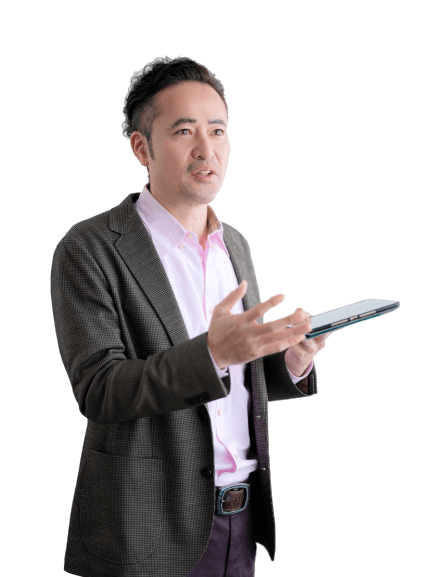
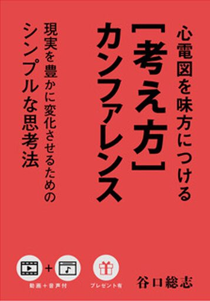

AIをまだ
使ったことがない
気にはなっている。でも、何から始めればいいのかわからない。そんな「ゼロからのスタート」の方こそ大歓迎です。
医療職のためのAI実践チーム
今の時代、AIはもう避けて通れません。
でも、ひとりで始めても続かない。
だから、AIを使い倒している谷口総志と
一緒にやりましょう。
MEDI-AI TEAM（MAT）は、谷口総志が主催する医療職のためのAI実践チームです。
ここは、AIを「教わる」場所ではありません。
一歩先でAIを使い倒している谷口総志と一緒に、あなた自身がAIを「使う」場所です。
医師、看護師、臨床工学技士、検査技師、リハビリ職……。医療の仕事には、AIに任せられる作業が驚くほどたくさん眠っています。資料づくり、マニュアルの整理、勉強会の準備、報告書。それを一つずつAIに渡していく。最終的には、Codexのようなツールを使って、作業そのものを自動化できるところまで一緒に進みます。
先生と生徒ではありません。同じ方向を向いて、一緒に手を動かす「チーム」です。
気にはなっている。でも、何から始めればいいのかわからない。そんな「ゼロからのスタート」の方こそ大歓迎です。
アプリは入れてみた。何度か質問もしてみた。でも、仕事で役立っている実感がない。その「あと一歩」を一緒に越えます。
そう感じている人のためにこそ、MATはあります。最初の一歩を踏み出すためのチームです。
MATは医療職が中心のチームなので、医療現場の話題が自然と多くなります。医療職以外の方も参加できます。

1974年、熊本生まれ。3児の父。臨床工学技士として、長年にわたり循環器の現場に立ち続けてきました。2008年からは心電図のセミナー講師としても活動しています。
かつては心電図がまったく読めず、上司から「お前なんて辞めてしまえ」と言われた過去を持つ人間です。その悔しさから、「わからない人の気持ちがわかる講師」として、詰め込むのではなく「伸ばす」独自のスタイルを築いてきました。
2016年に始めた心電図ブログが大きな反響を呼び、わずか4か月で書籍化。出版した4冊すべてがAmazonランキング1位を獲得しています。
さらに、セミナー講師の育成プログラム、出版プロデュース、一般社団法人全国セミナー講師協会の設立、複数のコミュニティ運営と、自ら次々と事業を立ち上げてきました。
そして今、谷口総志自身がAIを日々の仕事に取り入れ、使い倒しています。その実践を、医療職の仲間と分かち合う場としてつくったのがMATです。

著書（一部）

メイン
MATの中心は、谷口総志が登壇する定期勉強会です。AIを実際に動かしながら、明日から現場で使える形で一緒に進めます。聞いて終わりにはしません。
変化の速いAIの最新情報や、実際に役立った使い方を、医療職の目線でチームに共有していきます。
同じようにAIに挑戦している医療職の仲間とつながれます。ひとりでは続かないことも、チームなら続けられます。
MATで目指すゴール
谷口総志と一緒に、あなた自身が「AIを使う人」になること。
そしてCodexなどのツールで、作業を自動化できるところまで。
MEDI-AI TEAMへの参加について
参加費や申し込み方法は、
公式LINEでご案内しています。
迷っているなら、まずは一歩。行動した人から伸びていきます。
LINEで詳しく見るMATに参加しているメンバーから届いた声です。
MATメンバーAさん
AIのプロンプト等をうまく利用して、仕事の業務効率化を図る予定がまさかのアプリ開発に…
気づけば今までいじったことのないPythonを使い、わけわからんプログミングコードをAIに書いてもらい、ど素人がアプリっもいものを作ってる
なんとも奇妙な展開になっているが、今やっていることができれば少しはアイ使えた事になるのではないかと
ただ、地味に大変
MATメンバーBさん
AIを設計する人、AIを使う人、AIに使われる人。三極化するだろうという話を勉強会で聞きました。
昔読んだ『ドラゴン桜』で、桜井先生が「世の中の仕組みはそれを作っている人たちの都合のいいように作られている。知らない人は搾取され続ける。悔しかったら作る側になれ」というようなことを言っていたのを思い出しました。
今の私は使い方がよくわからない人。
このまま経過するとおそらくAIに使われる側。
本当に困っていなかったり、AIの活用で目立った成功体験がないからだと思います。
AIは進化しますが、進化しきることはないのではないかと思っています。
使いたいけど使えなくて困っている人はもちろんですが、いずれ使うことになるのであれば、困っていなくても使ってみる価値はあるかと思います。
私はAIを使うのが苦手です。ここには苦手な方・初心者もたくさんいます。
たくさんの方が参加することで、ここが駆け込み寺であり、専門家の集団でもあり、AIを使いこなしつつも人間味のあるコミュニティになるのではないかと思っています。
MATメンバーCさん
まっさらな素人から始めていますが、ポイントを押さえたコメントの数々で、想像以上に理解が進み、とても面白く学んでいます。
一方的に教えられる環境ではなく、メンバーの方々と情報共有しながら、個々のペースで進められるので、学びが身になる実感があり、とても楽しいです。
興味を惹かれているボクのような方、お値段以上の価値があると思います、お勧めします！
MATメンバーDさん
PC苦手。苦手というより大嫌い人間。
そんな自分がAIで時間を取り戻す！
ありがたき幸せ(ﾉ_ _)ﾉ
勉強会に参加し、院内学習用のスライドがすぐ出来ちゃいました！
が、しかし、欲が出てしまい、再度構成を立て直そうとして今プロンプトに悩んでます…。
みなさんと共に、習得出来たらなぁと思っています😊
MATメンバーEさん
医療職に限らず、これからの時代を生き抜くためにはAIの活用が必須だと思います。今始めるか始めないかで、取り残されるか一歩先を行くかが決まると思います。Youtuberがその良い例です。
いち早く始めたヒカキンやヒカルらは、収益化に成功し、知名度も上げたことで、現在は金銭面で何の苦労もしていないのだと思います。
周りと同じことをしていては成長はできません。これからさらに厳しくなる時代を乗り切るためには、一歩先を行く姿勢が必要です。
「AIとは何か」「どう使うのか」——まずはそこから始めることが、大きなチャンスにつながると思いました。
今の目標は、このチームの中でさらに先頭に立てるようになることです。
※MOSHに寄せられた口コミを掲載しています
AIを使い始めたい医療職のためのヒントを発信しています。
記事は順次公開予定です。
大丈夫です。むしろ、そういう方のためのチームです。MATの中心は、AIをこれから使い始めたい方、使ってみたけれどうまく使いこなせていない方です。
その気持ちのまま来てください。MATは、まさに最初の一歩を踏み出すためのチームです。準備が整うのを待つより、一緒に始めたほうがずっと早く進めます。
参加できます。ただ、MATは医療職が中心のチームなので、医療現場に関する話題が自然と多くなります。
メインは、谷口総志が登壇する定期勉強会です。そのほか、AIに関する情報共有や、メンバー同士の交流があります。
参加費やお申し込み方法は、公式LINEでご案内しています。下の「公式LINEで詳しい案内を受け取る」ボタンから友だち追加してください。
AIで身につけた力は、業務の効率化だけでなく、副業など新しい働き方にもつながっていきます。谷口総志がMATをつくった理由のひとつでもあります。ただし、収入を保証するものではありません。
参加費や申し込み方法は、
公式LINEでご案内しています。